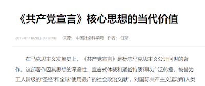
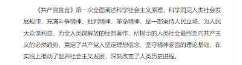

《共产党宣言》读后感 - Reflections on "The Communist Manifesto"
由于本文可能稍有敏感，这里仅展示英文版。
Foreword
My younger brother was tasked by his school to write a 3,000-word reflection on "The Communist Manifesto," and he asked for my help. Embarrassingly, I hadn't read the Manifesto myself, so I took this as an opportunity to dive in.
I read this version.
Significance
First and foremost, "The Communist Manifesto" played a pivotal role in organizing labor struggles. It defined the proletariat, organized unions, united workers, and led the proletariat in resisting capitalist oppression, most importantly, making capitalist countries reconsider their need to demonstrate their superiority. As Che Guevara once said, "After we're gone, they'll build schools and hospitals for you, raise your wages, not because they've had a change of heart or become kind, but because we were here."
The struggle of the lower and middle classes is an eternal theme of human civilization, as they often represent the most oppressed and impoverished within a nation or society. Every left-leaning individual (or rather, anyone who isn't far-right) should spend time and effort contemplating how to mobilize these groups into a political force, unite them, and improve their living conditions.
Limitations
"The Communist Manifesto" is somewhat outdated in certain aspects; the era of proletarian oppression it concerns is nearly behind us. A clear example is the near absence of a true proletariat in developed countries, where it has merged with the middle class. Thanks to increased welfare, higher base wages, and various labor movements, the proletariat in developed nations is no longer "property-less" as before. Instead, they live relatively comfortable lives.
For instance, in Canada, a worker earning a monthly salary of
$ 5,000 can afford a $ 400,000 small villa
(perhaps with some loans), drive a $ 30,000 car, dine at
Earls for a decent $ 40 steak, bread, and wine meal, and
buy groceries like 4L of milk for $ 6, 1kg of pork for
$ 15. Healthcare and eyeglasses are free, and education is
almost free. They enjoy weekends with sports, picnics, hiking, skiing,
and worship, and might even invest in stocks and bonds. This group can
be considered middle class.
Socialist states practicing Marxism-Leninism have generally failed at checks and balances, leading to highly centralized power. China, Vietnam, Laos, and Cuba are all authoritarian states, ranking low on global democracy indices.
I believe this is fundamentally because Marxism doesn't prioritize power balance, and its method of distributing state power is flawed. The bourgeoisie have no standing in Marxist regimes, the right-wing has no voice, and the proletariat lacks the education and oversight abilities. This opens doors for those in actual power (the bureaucratic class claiming to be proletarians) to consolidate their authority.
Moreover, "The Communist Manifesto" emphasizes the state power of the proletarian dictatorship but downplays the supervision of the "representatives of the proletariat." In reality, power corrupts all who wield it. A leader from a proletarian background ceases to be a proletarian the moment he assumes office; he becomes part of the bureaucratic class. For various reasons, states capable of authoritarian rule will inevitably resort to it.
"The Communist Manifesto" holds an overly extreme view on traditional culture and religion. Modern society should value diversity and individual rights more. For instance, if the goal of an ideology is to eliminate all religions, then it inherently lacks freedom. Furthermore, for a nation, is the benefit of "eliminating religion" worth the effort compared to its costs?
I think the idea of eradicating traditional culture and religion (among many similar notions) is essentially arrogant: "I believe this is harmful to you, so I will eliminate it regardless of your preference."
From a scientific standpoint, eradicating traditional culture and religion might seem beneficial. However, humans and societies are complex, and these elements offer alternative perspectives. Eliminating them also eradicates social complexity, leading to homogenization.
Conclusion
In summary, political groups should critically study "The Communist Manifesto," acknowledging its significance while being wary of its "toxicity."
It represents an ideology that has never succeeded (no Marxist-Leninist state has become developed, let alone a communist one), shows apparent instability (lacking balance among political forces, leaving many unrepresented), and most Marxist regimes ultimately collapse or reform.
Destruction is infinitely easier than construction. "The Communist Manifesto" should only serve as a reference for left-wing party activities, not as a guiding philosophy for a nation.
Other
For Chinese students, since Marxism is considered far-left (i.e., its demands are too extreme compared to today's society: abolishing private property, abolishing the state, pursuing excessive equality), it might push students' thinking towards extremism. Therefore, Marxism is not suitable as the first (or only) political theory lesson for students. A course like "Introduction to Contemporary Chinese and World Political Thought" would be better than "Principles of Marxism."
Before committing to revolution attracted by the far-left's utopian visions, young people should ponder whether a terrestrial paradise is realistic.
I dislike Marx's statement, "Philosophers have only interpreted the world in various ways; the point, however, is to change it."
Marx and Engels were theorists who didn't perfect their theory yet dismissed its importance. Isn't this ostrich mentality?
Moreover, the Great Leap Forward and the Cultural Revolution, driven by Mao Zedong and others' rigid adherence to communist literature and inflexible theories, brought suffering to China. Concepts like "Man must conquer nature," "exercise subjective initiative," and "class struggle" were to blame.
No stable modern state is built on hatred, seeking "revenge" against another class (e.g., the feudal or capitalist classes). All hatred can be a tool for rulers to manipulate and control the masses.
Moreover, if the feudal and capitalist classes are eliminated, what is the government's legitimacy? Shouldn't the government step down and relinquish power?
Analysis of Selected Sentences
Below is my aggressive analysis, sentence by sentence, of some passages from "The Communist Manifesto."
Chapter One: Bourgeois and Proletarians
"All hitherto societies have had a history of class struggles."
I think a more accurate description would be, "The history of all societies up to now has been the history of various forces in balance."
People do not necessarily need to ally with others of the same class. There are struggles within the bourgeoisie, such as corporate warfare. Even among "proletarians," there are conflicts. Moreover, in an atomized society, every individual is in competition with everyone around them, rendering class irrelevant.
Furthermore, the term "struggle" may not be the most fitting. In a well-functioning society, the competition among various forces is not so intense, and there are many historical examples of successful peaceful protests. Instead of "struggle," "balance" might be a more appropriate term.
"The bourgeoisie has stripped of its halo every occupation hitherto honored and looked up to with reverent awe. It has converted the physician, the lawyer, the priest, the poet, the man of science, into its paid wage laborers."
And then what?
If not compensated with money for their labor, should we use something more ethereal? It's not impossible, but it could facilitate exploitation by the powerful over the weak. For example, a village tyrant or local official could have his doctor treat him for free, without any compensation.
"The bourgeoisie, during its rule of less than a hundred years, has created more massive and more colossal productive forces than have all preceding generations together."
I'd argue that it's "advanced technology," not the "bourgeoisie," that created productive forces. The proletariat, or even emperors, could also utilize advanced technology to create productive forces, build steamships, and lay telegraph lines.
"Modern industry has converted the little workshop of the patriarchal master into the great factory of the industrial capitalist. Masses of laborers, crowded into the factory, are organized like soldiers."
Personally, I'm not sure whether small workshops or large factories are definitively more comfortable for workers. However, with the advancement of time, large factories are more advanced, brighter, cleaner, and have stricter safety measures, possibly making them somewhat better than small workshops.
"Occasionally the workers are victorious, but only for a time. The real fruit of their battles lies, not in the immediate result, but in the ever-expanding union of the workers."
I strongly agree. If workers are to gain more power, they must unite to fight atomization by the state or capitalists.
"The proletariat goes through various stages of development. With its birth begins its struggle with the bourgeoisie. At first the contest is carried on by individual laborers, then by the workpeople of a factory, then by the operatives of one trade, in one locality, against the individual bourgeois who directly exploits them."
I strongly agree. The workers' failures are temporary. As long as they continue to be oppressed, they will organize and resist. I sincerely hope that everyone dissatisfied with their lives will take the time to read "The Communist Manifesto."
"In the conditions of the proletariat, those of old society at large are already virtually swamped. The proletarian is without property; his relation to his wife and children has no longer anything in common with the bourgeois family relations."
Is this how it should be or how it actually is? I don't believe the proletariat should or indeed has abandoned nation, law, morality, or religion.
Chapter Two: Proletarians and Communists
"The average price of wage labor is the minimum wage, i.e., that quantum of the means of subsistence which is absolutely requisite to keep the laborer in bare existence as a laborer."
This only holds true in situations where workers cannot unite to demand their rights. In modern society, workers' wages are determined by the degree of their unity and the scarcity of labor.
"Some object that upon the abolition of private property, all work will cease, and universal laziness will overtake us."
The latter half of this statement does not logically follow from the first. It can be argued that in bourgeois society, workers not benefiting from their labor is relative, as workers still possess some private property. It's precisely because private property exists that a diligent ethos is maintained. And we know that the communal dining hall model, which fully realizes communism, indeed breeds laziness.
We can infer from this that "The Communist Manifesto" is not a bible, its contents are not eternal truths, and its authors are not saints. There are errors within that need to be corrected by later generations.

"But you communists would introduce community of women, screams the
entire bourgeoisie in chorus. The bourgeois sees his wife merely as a
production instrument.
When they hear that production instruments are to be exploited in
common, they naturally think that the same fate will befall women.
They fail to consider that the issue lies in stopping women from being
treated merely as instruments of production. In fact, it's ludicrous for
the bourgeoisie, with their sanctimonious appearances, to express shock
at the so-called official community of women proposed by communists. The
community of women has almost always existed; it doesn't need to be
introduced by communists.
Our bourgeois, not satisfied with having the wives and daughters of
their proletarians at their disposal, not to mention the formal
institution of prostitution, take the greatest pleasure in seducing each
other's wives.
Bourgeois marriage is, in reality, a form of 'wives in common.' People
can at most accuse communists of wanting to introduce an officially
sanctioned, openly acknowledged form of 'wives in common' in place of
one that is hypocritically concealed."
Firstly, it's unclear whether Marx and Engels support "community of women." They seem to tacitly permit communists to practice it while also indicating the public's aversion to it and suggesting the bourgeoisie's misconduct in this regard is illegitimate. If Marx intended to use the bourgeoisie's "community of women" and traditional culture's version to justify the proletariat's version, it contradicts the logic of "The Manifesto" itself (since it previously invalidated the legitimacy of the bourgeoisie and traditional culture).
Secondly, even in 2023, there are hardly any proponents of "community of women." No communist country has legalized it, let alone in the era when "The Manifesto" was written. Although we might reluctantly say "The Communist Manifesto" is a very futuristic and advanced declaration, if it still seems ahead of its time nearly 200 years later, it's hard to say whether it's a prophecy or a fantasy.
Thirdly, how can we prove statements like "The bourgeoisie sees his wife as a mere instrument of production" and "Bourgeois marriage is, in reality, a system of wives in common"? Regarding bourgeois marriage, I have no experience or insight, but I believe the vast majority of people do not consider bourgeois marriage to be a form of communal marriage. Marx and Engels likely made the mistake of using a minority to represent the whole, taking the most morally bankrupt among the bourgeoisie as representative of all. Even if these statements were true, does someone else's wrongdoing justify the proletariat's? Is the misdeed of others a reason for one not to do good?
Lastly, Marx and Engels launch broad accusations without evidence, acting like online trolls ("The bourgeois not satisfied with having the wives and daughters of their proletarians at their disposal, not to speak of common prostitutes, take the greatest pleasure in seducing each other's wives."). I acknowledge there must be members of the bourgeoisie who have engaged in such behavior, but what matters is the overall quality. If there's even one bourgeois who does not engage in prostitution, doesn't the logic of this statement collapse?
However, it must be said, it's filled with a fighting spirit, akin to a shrewish quarrel or internet trolls launching attacks everywhere. It's drawing targets out of thin air, concluding first and discrediting for the sake of discrediting. Such lofty discourse is truly refined.

"Some accuse communists of wanting to abolish nations and
nationalities."
"Workers have no country. You cannot take from them what they do not
have."
According to Marx, if workers feel they have no country, then they indeed have none. Even if they believe they do, it's irrelevant. This is quite an authoritarian stance.
A compromise would be to send all workers who feel they have no country to a "Marxist state," while those who feel a connection to their homeland can return to their respective nations.
"The ruling ideas of each age have ever been the ideas of its ruling class."
Strongly agree, this is insightful.
Provide public and free education for all children, abolish the current form of child labor in factories, and integrate education with material production, among other measures.
This reminds me of the "Up to the Mountains and Down to the Countryside" movement, where children were mobilized for production labor. Reflecting on it, Mao Zedong's adherence to "The Communist Manifesto" seems proficient... whether this was a blessing or a curse is still up for debate.
Chapter Three: Socialist and Communist Literature
"To win over the people, nobles brandish the proletarian's beggar's bag as a flag. However, whenever the people follow them, they discover the old feudal coat of arms on their backsides, leading to laughter and dispersion. "
Is this reality or Marx's fantasy? If it's the latter, data is needed to show how many nobles attempted to win over the people and how many people saw through their "tricks."
My assessment is: Inferior propaganda, appealing to emotions.
Chapter Four: Position of the Communists in Relation to the Various Existing Opposition Parties
"In short, the Communists everywhere support every revolutionary
movement against the existing social and political order of
things."
"The Communists disdain to conceal their views and aims. They openly
declare that their ends can be attained only by the forcible overthrow
of all existing social conditions. Let the ruling classes tremble at a
Communistic revolution."
How does this differ from terrorism, such as the jihadist faction of Islam? Moreover, communism seems less suited to human society than Islamic doctrine (since there are no pure communist states today, but there are pure Islamic states).
Could the jihadist faction also say: "We jihadists support every revolutionary movement against the existing social and political order, let Europe tremble before the glory of the true God."
"Workers of the world, unite!"
"Burrito lovers of the world, unite!"
"Burrito lovers" is a term I've coined for those who enjoy burritos and have eaten them in at least two out of their last three meals. I believe "burrito lovers" have more in common worldwide and more shared demands than "proletarians." The term itself is better defined, and "burrito lovers" should be able to unite more easily than "proletarians."
Epilogue
My younger brother plans to revise this reflection before submitting it. I believe it might be the most aggressive critique of "The Communist Manifesto" his school has received in the past three years.